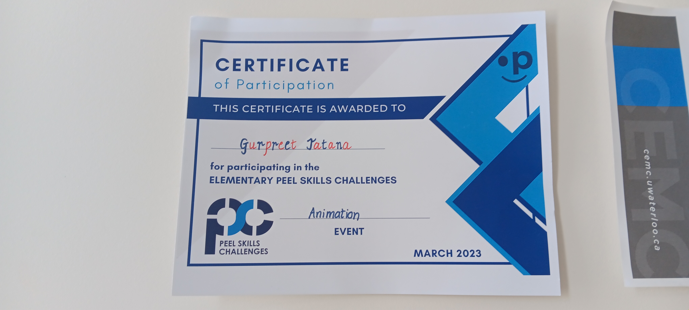
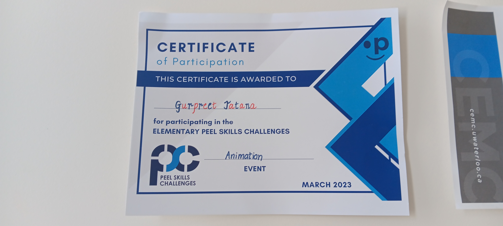

Hello everyone! My name is Gurpreet. Here you will find a get to know about me. I was born and raised in canada but my parents are from india. I am 14 years old and I go to St. Edmund campion secondary school. I was not always apart of the duffiern peel cathoic district school borad. I was apart of peel before. One thing you may not know about me is that I really enjoy math. I even particped in the Gauss math contest for 2 years in a row and Im also planning on doing it this year too! I also really enjoy sports. In my old school I was apart of the batmantin, corss country, and basketball team. This year I was also apart of cross country. I've also been taking classes on swimming and skating. I've been swimming since I was 5 years old and I started skating when I was 7. It now has been 9 years since I've been swimming and 7 years since I've been skating. I really enjoy playing sports. In my freetime I also like to do origami. Ive now been doing origami since I was in 5th grade. I always enjoy kearning how to fold new animals in origami, right now I know how to fold a jumping frog, paper crane, and a crow. I've also always been into techonogly. I was apart of peel skills and did animation. I first started ;earning more about techongoly since I was in 4th grade when I first started using softwares such as google docs. slides, canva ect. I also now know how to create websites using wix and now using HTML. I am also able to learn fast when it comes with techongoly. I've been able now since I've been taking business and techongoy to help advance my skills with the computer and I was able to learn alot from this course.
 

.
Work I've done
Over the past couple months we've done alot of work to help us learn more about techongoly. Here are some pecies of work that Im very pround of and want to show you guys.
The first one I would like to show is my website. I made this an online jelwery store. I named my store Jadie which means edmerld in greek, one of the most vauleable gemstones in the world. This was the first time I used wix to create a website.
Jadie Jelwery StoreThis is only one of the works I've done there is many many more. Like for example I am going to show you the social media pledge I made. People spend alot of time. This is to help people who do use it. In fact did you know that being on your device for a long amount of time can affect your eyesight?
In this assigment we were asked to do reserch about a desptop software program. I chose venngage. Venngage is a software similar to canva and easy to use. Here I made a quick prestation about how to use venngage and then made a video about how to use it.
This assigment was the first time of me using prestation and also the first time using templates which was very exciting for me. I was able to create this prestation in under 30 miuntes thanks to the template and because of this I've learned that using templates is effortless and easy to use and gives you a good looking presatation in a short amount of time. Here is this link for it
And the last one I would like to show is a poster we made. This was a group project and we were assigened to help orgnaize a celebration for a promtion we got at work. We were assigned to create a letter and poster to let everyone know about it and a video about it as well.
Poster